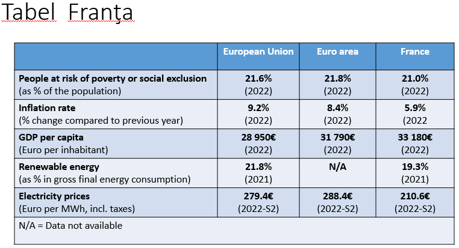
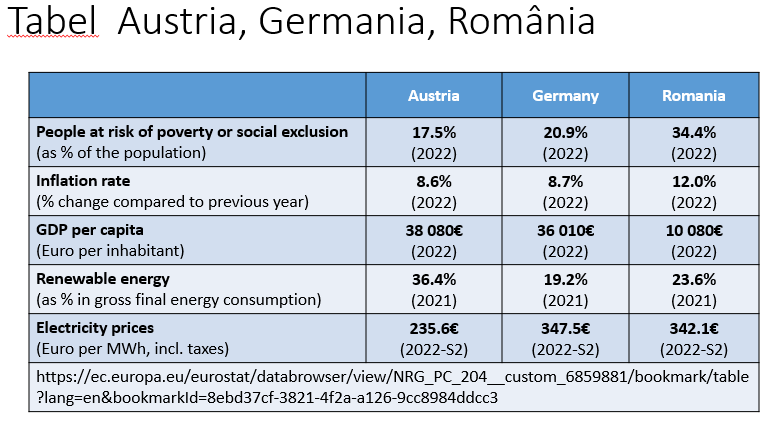
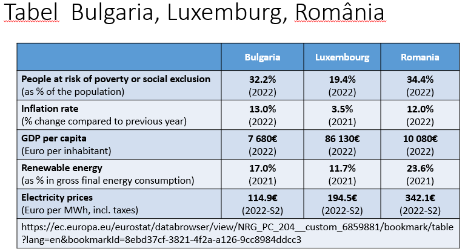

F I Ş A DE LUCRU NR. 3
INTRODUCEREA TABELELOR, DIAGRAMELOR ŞI ELEMENTELOR DE TIP CLIPART
-
Adăugarea unui tabel în document
Selectaţi diapozitivul în care doriţi să adăugaţi un tabel → Fila inserare (Insert) → grupul tabele
(Tables) → clic pe tabel (Table) → selectaţi numărul de coloane şi linii dorit → clic pe stilul de
tabel dorit (Table Style)

Obs: Pentru a introduce text în tabel se dă clic pe celula respectivă
Pentru a mai adăuga o linie se dă clic în ultima celulă şi se apasă tasta Tab
-
Adăugarea unui ClipArt în document
Selectaţi diapozitivul în care doriţi să adăugaţi un ClipArt → Fila inserare (Insert) → grupul
Imagini (Images) → clic pe butonul Imagini Online (Online Pictures)

Introduceți un cuvânt sau o expresie pentru a descrie ceea ce căutați, apoi apăsați pe Enter.

Filtrați rezultatele după Tip(Type) pentru Clipart.

Selectați o imagine şi clic pe Insert

-
Adăugarea unei miniaturi (SmartArt) în document
Selectaţi diapozitivul în care doriţi să adăugaţi o miniatură → Fila inserare (Insert) → grupul
Ilustraţii (Illustrations) → clic pe butonul miniaturi (SmartArt) → clic pe miniatura dorită


-
Inserarea unei imagini (Picture) în document
Selectaţi diapozitivul în care doriţi să adăugaţi o imagine → Fila inserare (Insert) → grupul
Imagini (Images) → clic pe butonul Imagine (Pictures) → clic pe imaginea dorită
-
Adăugarea unei imagini de fundal (background)
Clic dreapta pe diapozitivul dorit → Formatare fundal(Format Background)

→ Bifaţi Imagine sau culoare umplere (Picture or texture fill)

→ clic pe butonul Inserare imagine din: Fişier… (Insert picture from: File…)
→ clic pe imaginea dorită → clic pe butonul Inserare (Insert) → clic pe butonul
Aplică la toate (Apply to All) → clic pe butonul Inchidere (Close)
-
Aplicarea unui şablon de diagramă
Fila inserare (Insert) → grupul Ilustraţii (Illustrations) → butonul diagramă (Chart) → clic
pe un tip de diagramă →OK
-
Inserarea unui element de tip WordArt
Fila inserare (Insert) → grupul text (Text) → butonul WordArt → se alege: Stilul (WordArt
Styles), Culoarea de umplere a textului (Text Fill), Culoarea conturului textului (Text
Outline), Efecte (Text Effects), etc.
APLICAŢIE
-
- Lansaţi aplicaţia Microsoft PowerPoint,
- Titlul primului diapozitiv: "INTRODUCEREA TABELELOR, DIAGRAMELOR ŞI ELEMENTELOR DE TIP CLIPART",
- Aplicaţi tema 'Berlin' documentului,
- Adăugaţi un diapozitiv nou Cu titlu (Title Only),
- In acest diapozitiv inseraţi un tabel pe care să-l completaţi cu următoarele date:

- Adăugaţi un diapozitiv nou Cu titlu (Title Only), "IMAGINI"
- In acest diapozitiv inseraţi o miniatură de tip Ierarhie(Hierarchy) şi o imagine cu câini,
- Adăugaţi un diapozitiv nou Cu titlu (Title Only);
- In acest diapozitiv inseraţi în titlu un element WordArt, iar in conţinut o diagramă de tip linie(Line),
- Setaţi prezentării un fundal de culoare albastră(Solid fill)
- Salvaţi documentul cu numele vostru: nume_prenume_fisa_3.pptx
-
- Lansaţi aplicaţia Microsoft PowerPoint.
- Titlul primului diapozitiv: "INTRODUCEREA TABELELOR, DIAGRAMELOR ŞI ELEMENTELOR DE TIP CLIPART",
- Aplicaţi tema 'Facet' documentului
- Adăugaţi un diapozitiv nou Cu titlu (Title Only);
- In acest diapozitiv inseraţi un tabel pe care să-l completaţi cu următoarele date:

- Adăugaţi un diapozitiv nou Cu titlu (Title Only), "IMAGINI"
- In acest diapozitiv inseraţi o miniatură de tip Relaţie(Relationship) şi o imagine cu cai,
- Adăugaţi un diapozitiv nou Cu titlu (Title Only);
- In acest diapozitiv inseraţi în titlu un element WordArt, iar in conţinut o diagramă de tip coloană(Column),
- Setaţi prezentării un fundal de culoare albastră(Gradient fill)
- Salvaţi documentul cu numele vostru: nume_prenume_fisa_3.pptx
-
- Lansaţi aplicaţia Microsoft PowerPoint.
- Titlul primului diapozitiv: "INTRODUCEREA TABELELOR, DIAGRAMELOR ŞI ELEMENTELOR DE TIP CLIPART",
- Aplicaţi tema 'Organic' documentului
- Adăugaţi un diapozitiv nou Cu titlu (Title Only);
- In acest diapozitiv inseraţi un tabel pe care să-l completaţi cu următoarele date:

- Adăugaţi un diapozitiv nou Cu titlu (Title Only), "IMAGINI"
- In acest diapozitiv inseraţi o miniatură de tip Matrice(Matrix) şi o imagine cu pisici,
- Adăugaţi un diapozitiv nou Cu titlu (Title Only);
- In acest diapozitiv inseraţi în titlu un element WordArt, iar in conţinut o diagramă de tip suprafaţă
- Setaţi prezentării un fundal de culoare albastră(Pattern fill)
- Salvaţi documentul cu numele vostru: nume_prenume_fisa_3.pptx